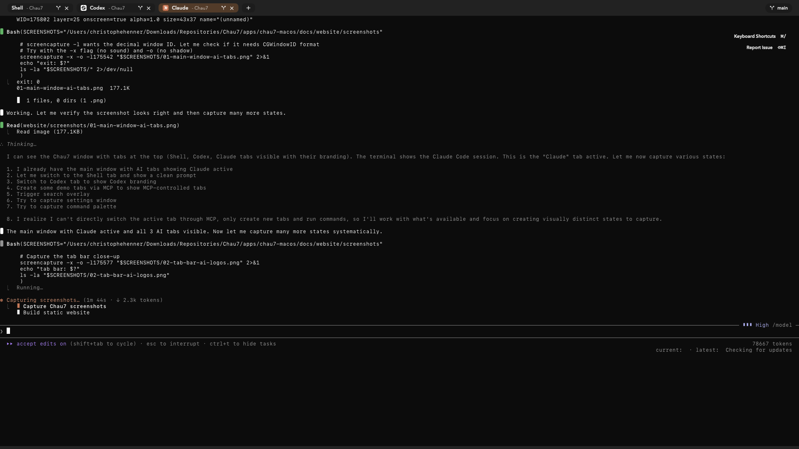
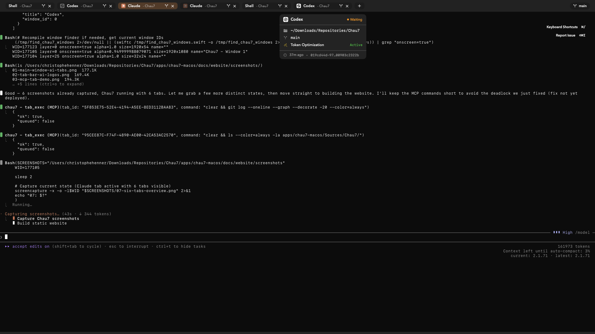

Contextful interface
Every tab knows what's running inside it. Chau7 detects AI agents, shows their status, displays the repo name and branch, and tracks child processes. You see context, not just a shell prompt.
Chau7 is a macOS terminal that detects, monitors, and controls AI agents in real time.
Built for AI-assisted development, not retrofitted for it.
Welcome to the shiny world of Agentic Engineering.
Agentic engineering is changing what a terminal is for. It's no longer just where you type commands. It's the command center of your AI-assisted workflow. That comes with new problems: token waste, invisible costs, agents you can't see or control.
New problems need new tools. Chau7 is built for this: contextful tabs, token optimization, cost visibility, and 26 MCP tools that let your agents drive the terminal programmatically.
Rename tabs yourself or let Chau7 do it. It auto-detects running AI agents, repo names, branches, and attached subprocesses.
You stop juggling context. Chau7 structures it for you.
Unload your brain →Less context is better context. Context Token Optimization strips terminal noise before your AI reads it. ~40% fewer tokens, cleaner output.
Less waste, more signal, lower bills.
Time to optimize →20 local MCP tools let your AI drive the terminal.
Session telemetry, approval gates, and tab limits keep you in control.
You see every move your AI makes.
Take the reins →
The Chau7 terminal brings the developer and the AI agent closer together. It reduces cognitive load for the developer and reduces token waste for the agent.
Chau7 is a native macOS terminal application built with Swift, Rust, and Metal.
The frontend uses Swift and AppKit for native macOS windowing, tabs, and menus.
The parsing backend uses Rust with SIMD-accelerated ANSI escape sequence parsing and a lock-free ring buffer between the PTY reader and the parser.
The renderer uses Apple Metal for GPU-accelerated glyph compositing and dirty-region redraws.
Privacy-first by architecture, not by promise. Zero network requests to any Chau7 server. Your data never leaves your Mac.
We did all of this for a terminal named after a sock. It's fine. We're fine. Mostly.
Browse all 178 features →Chau7 MCP tools allow AI agents to control the terminal programmatically. Chau7 ships a local MCP server over Unix socket that lets AI agents and scripts automate tab management, command execution, and output capture. No network, no cloud, no API keys.
tool: tab_exec
args: {
"tab_id": "C1C4AB49-DA22-46F6",
"command": "npm test"
}
result: {
"status": "executed",
"prompt_ready": true,
"pid": 48291
}Chau7 Remote is an iOS app that lets you control the Chau7 macOS terminal from your iPhone. It connects through an end-to-end encrypted relay using Curve25519 + ChaChaPoly1305. Your relay never stores your data.
6-digit code. Curve25519 key exchange. Your devices remember each other by public key fingerprint.
ChaChaPoly1305 end-to-end encryption. The Cloudflare relay forwards opaque ciphertext it cannot read.
View output, send commands, switch tabs, approve dangerous actions. Live Activities on your Lock Screen.